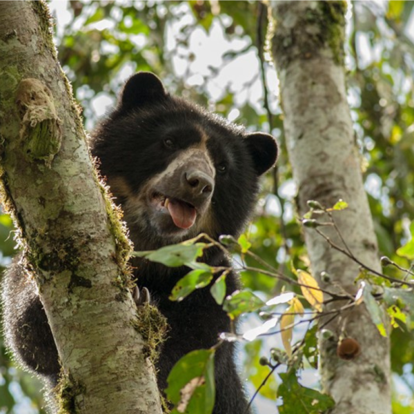
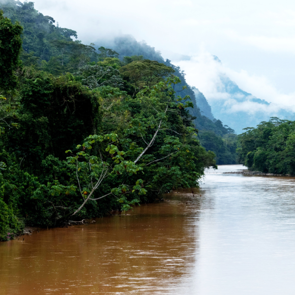
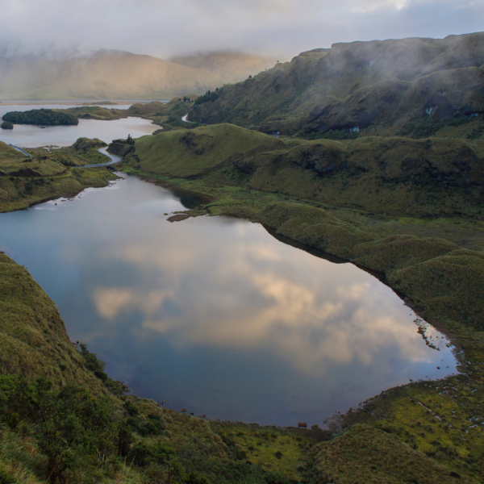
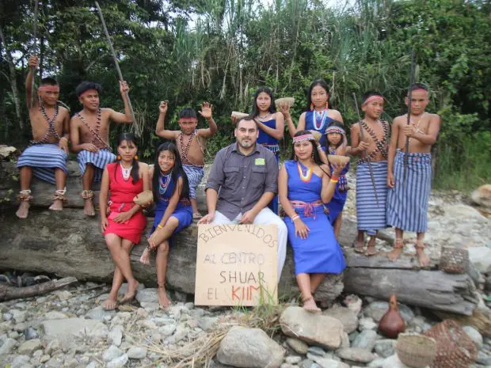
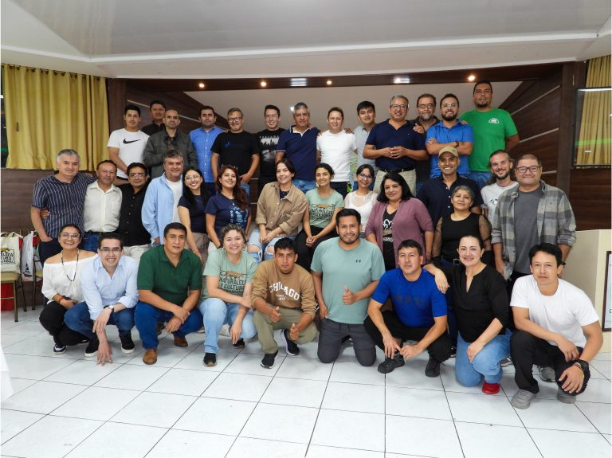

Nuestro enfoque y visión

Proteger paisajes saludables y conectados
Naturaleza y Cultura Internacional trabaja junto a pueblos indígenas, comunidades locales, gobiernos y aliados para proteger algunos de los paisajes con mayor biodiversidad de América Latina. Estos territorios vivos albergan una biodiversidad extraordinaria. Al mismo tiempo, almacenan carbono, resguardan fuentes de agua dulce y sostienen culturas y medios de vida.
Durante más de 30 años, este enfoque liderado desde lo local y basado en la conservación a escala de paisaje ha permitido proteger millones de hectáreas.
Hoy sigue guiando nuestra visión: fortalecer la gobernanza y el cuidado de estos territorios para que permanezcan protegidos y saludables para las generaciones futuras.
Más de 30 años protegiendo la naturaleza | 11.9 millones de hectáreas protegidas| 14 millones de hectáreas para 2030
Explora nuestro trabajoNuestra visión para 2030
La próxima década será decisiva para la biodiversidad y la resiliencia climática en América Latina. Sobre la base de más de tres décadas de trabajo en conservación, nos enfocamos en asegurar que los paisajes se mantengan protegidos y se gestionen de manera efectiva a gran escala.
Esta visión busca fortalecer la conservación de la biodiversidad ampliando la protección de bosques dentro de paisajes conectados donde la naturaleza y las personas puedan prosperar juntas.
PAISAJES SALUDABLES
14 MILLIONES DE HECTÁREAS PROTEGIDAS
Proteger más de 14 millones de hectáreas de paisajes saludables y conectados en América Latina.
ESTABILIDAD CLIMÁTICA
MIL MILLIONES DE TONELADAS DE CO₂e ALMACENADAS
Proteger bosques que almacenan mil millones de toneladas de carbono y ayudan a evitar emisiones a gran escala.
BIODIVERSIDAD
500+ ESPECIES AMENAZADAS PROTEGIDAS
Garantizar hábitat para cientos de especies amenazadas en ecosistemas conectados..

GOBERNANZA REGIONAL
7 COALICIONES DE CONSERVACIÓN
Fortalecer estructuras regionales de gobernanza que gestionan paisajes a gran escala.
PROTECCIÓN A LARGO PLAZO
41 % DE LOS PAISAJES CON FINANCIAMIENTO SOSTENIBLE
Lograr que casi la mitad de los paisajes protegidos cuenten con mecanismos duraderos de financiamiento para su conservación.

Por qué este trabajo es importante
Los bosques saludables y conectados se encuentran entre las
defensas naturales más poderosas frente a la pérdida de
biodiversidad y el cambio climático. Proveen hábitat para
innumerables especies, mantienen procesos ecológicos esenciales,
protegen los sistemas de agua dulce y sostienen a las comunidades
que dependen de ellos.
Sin embargo, estos ecosistemas enfrentan una fragmentación
creciente causada por la deforestación, el desarrollo no planificado y
el uso insostenible de los recursos naturales. Proteger sitios aislados
no es suficiente.
La conservación debe mantener la conectividad entre paisajes para
que las especies puedan desplazarse, los ecosistemas puedan
adaptarse y las personas sigan beneficiándose de sistemas naturales
saludables.
Cómo funciona nuestro modelo de conservación
Proteger paisajes, fortalecer alianzas y asegurar la conservación a largo plazo
Nuestro enfoque se basa en tres prioridades interconectadas:

Proteger paisajes clave
Apoyamos la creación y el fortalecimiento de áreas protegidas en paisajes de alta biodiversidad que enfrentan...

Fortalecer el liderazgo y las coaliciones regionales
Más del 90% de nuestro equipo vive y trabaja en los territorios donde desarrollamos nuestras acciones.

Asegurar la gestión a largo plazo
Promovemos mecanismos de financiamiento y herramientas de gestión que ayudan a garantizar la protección de estos paisajes...
Liderazgo local a escala de paisaje
Naturaleza y Cultura Internacional nació de una idea sencilla: la conservación funciona mejor cuando surge de relaciones sólidas con las personas que viven en los territorios.
Hoy contamos con una red de más de 150 profesionales de la conservación en América Latina: científicos, especialistas legales, facilitadores comunitarios y expertos en cartografía, que trabajan junto a aliados locales en los paisajes que protegen.
Este enfoque, arraigado en lo local, permite proteger paisajes de gran biodiversidad mientras se respeta la cultura y se fortalecen los medios de vida sostenibles y la resiliencia de las comunidades.

Mirando hacia el futuro
La próxima década será decisiva para la biodiversidad y la estabilidad climática. A medida que aumentan las presiones ambientales, los enfoques de conservación que combinan la protección de bosques saludables, la conectividad ecológica y el liderazgo local serán más necesarios que nunca.
Naturaleza y Cultura Internacional mantiene su compromiso de proteger paisajes vivos que sostienen la biodiversidad, los sistemas de agua dulce, la resiliencia climática y el bienestar humano en toda América Latina.
30 añosFinancieros y
Reportes Medios de
Comunicación Publicaciones Investigaciones Contáctanos Políticas de
Privacidad
Internacional
Naturaleza y Cultura
Internacional
es una
organización
no
gubernamental 501 (c) (e)
EIN: 33-0773524
Del Mar, CA 92014, USA Llámanos +1 (858) 259-0374 Escríbenos hola@naturalezaycultura.org Síguenos en Redes Sociales